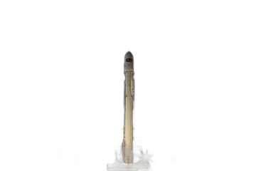
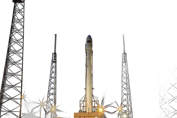

開源探索誌｜每集打開一個黑盒子
開源探索誌OSS
EXPLORER
001
AI 在你的瀏覽器裡把主角剪下來，照片不離開你的裝置。選一張範例，或放你自己的照片試試。
範例照片
換背景
全部在你的瀏覽器裡算，照片不會上傳。
4.4 MB

u2netp 只留火箭

isnet 連發射塔都留
整個資料夾的商品照一次去背、換白底、裁成蝦皮或 momo 的尺寸。macOS 內建的主角擷取當主力，rembg 當備援；賣點是省時間，一次買斷。
rembg 自己就有一行指令開的網路服務（rembg s），讓別的程式把照片傳來去背。在它前面加上每個客戶一組通行碼、按張計費、只用可以商用的 u2net／u2netp，賣給不想把照片送出國、也不想自己維護的公司。
在網頁裡去背、換規定的底色、排成可以列印的版面，大頭照不會傳到別人的電腦。
寵物或自拍自動去背、加白邊和字，輸出成 LINE 的規格；白邊剛好蓋住毛髮邊緣剪不乾淨的地方。
縮放與正規化。照片縮成 320×320 後，每個顏色值先除以整張圖的最大值，再減去 ImageNet 資料集的平均、除以標準差（R/G/B 各一組），排成「先紅、再綠、再藍」的 Float32 陣列。這跟 rembg 的 U2netpSession 一模一樣，只有縮放演算法不同（Python 用 PIL 的 LANCZOS，瀏覽器用 canvas）。
U²-Net。為「找出畫面裡最顯眼的東西」（顯著物體偵測）訓練的網路：外層是 U 形網路，每一層裡面又是一個小 U，所以叫 U 平方。它不分類物體，只判斷顯不顯眼，所以火箭配發射塔這種主角不明確的照片，各模型答案不同。
分數變透明度。模型輸出 320×320 的分數，先拉伸到 0–255（最小值變 0、最大值變 255），放大回原尺寸，直接當成 PNG 的透明度（alpha）。主角佔畫面的比例，是透明度 ≥ 128 的點所佔的比例。
2026-11-24 在雲端工作區（2 vCPU、8 GB RAM）實際執行：rembg 2.0.87、onnxruntime 1.29.0（Python）、onnxruntime-web 1.31.1（瀏覽器）、Chromium（Playwright）。最新版 2.0.88（2026-11-24 發布）只多了 birefnet-dynamic 模型，預設模型與本集用到的模型都沒變。腳本與原始輸出在 lab/ 資料夾，clone 下來就能重跑。
| 模型 | 模型大小 | 咖啡杯 | 貓 | 火箭 | 記憶體峰值（累計） | 與 isnet 一致度（咖啡杯／貓／火箭） |
|---|
時間是 rembg Python 版每張圖跑 3 次的中位數。記憶體是依表格順序在同一個 Python 行程裡跑完該模型後的 RSS 峰值，包含函式庫本身與前面的模型，只能看趨勢。「一致度」是各模型的遮罩跟 isnet-general-use 的 IoU（兩個範圍重疊的比例），不是準確率（沒有人工標註的正解）。birefnet-general-lite（224 MB）也試了，但推論一張圖就用掉超過 6 GB 記憶體，在 8 GB 的機器上被系統終止，沒有列入（當時觀察，未留下原始紀錄）。
上面的 Demo 是照 rembg 的前後處理重寫成 JavaScript 的。用 Playwright 開真的 Chromium，對三張範例照片各跑三次取中位數，跟 rembg Python 版在同一張照片上算出的遮罩比對。「對照組」：同樣用 Python，只把輸入從 scikit-image 原圖換成網頁上壓縮過的 JPEG，看差多少。
| 照片 | 瀏覽器推論時間 | 遮罩 IoU（瀏覽器 vs Python） | 平均每點差異（0–255） | 對照組 IoU |
|---|
一定要指定模型。不指定的話，rembg 預設會下載約 1 GB 的 BRIA RMBG-2.0，而它要另外付費才能商用。
pip install "rembg[cpu,cli]==2.0.87" # 要加 cli，命令列才能用 rembg i -m u2netp input.jpg output.png # 4.4 MB，最快 rembg i -m isnet-general-use input.jpg output.png # 170 MB，邊緣較乾淨
from rembg import new_session, remove
from PIL import Image
session = new_session("u2netp") # 建一次，重複使用
out = remove(Image.open("input.jpg"), session=session)
out.save("output.png") # 帶透明度的 PNG
ort.env.wasm.numThreads = 1; // GitHub Pages 沒有跨來源隔離，用單執行緒
const session = await ort.InferenceSession.create("u2netp.onnx");
// input：320×320、÷最大值、ImageNet 正規化、CHW 排列的 Float32Array
const out = await session.run({ [session.inputNames[0]]: new ort.Tensor("float32", input, [1, 3, 320, 320]) });
const prob = out[session.outputNames[0]].data; // 320×320 的分數，拉伸到 0–255 後當 alpha
規模與活躍度。GitHub 25.7k 顆星、2,515 個 fork（2026-11-25，GitHub API）；程式 MIT 授權（LICENSE 原文：Copyright (c) 2020 Daniel Gatis）；最近一次 commit 在 2026-11-24。
| 模型 | 程式／權重授權 | 已知的訓練資料條款 | 商用 |
|---|---|---|---|
| u2net、u2netp | Apache-2.0 | – | ✅ 權重授權允許；本集 Demo 用的就是 u2netp |
| silueta | 社群在 U-2-Net issue 裡釋出的縮小版，沒有另外宣告授權 | – | ⚠️ 授權不明 |
| isnet-general-use | 程式 Apache-2.0，權重沒有另外宣告 | 出自 DIS5K 團隊：學術版用 DIS5K（限非商用）訓練，通用版沒有公開訓練資料 | ⚠️ 灰色地帶 |
| BiRefNet | 程式與權重 MIT | general 權重也用了 DIS5K | ⚠️ 灰色地帶 |
| BRIA RMBG-2.0（rembg 的預設） | BRIA 授權（非商用部分依 CC BY-NC 4.0）；透過 rembg 下載不會跳出條款，但條款照樣適用 | BRIA 自己取得授權的資料 | ❌ 要向 BRIA 付費簽約 |
| SAM | Apache-2.0 | – | ✅ 權重授權允許（用法是點選指定物體） |
「–」代表這集沒有查證它的訓練資料條款；表格不是法律意見，正式商用前請自行確認。BRIA RMBG-2.0 本身就是 BiRefNet 架構，只是用 BRIA 自己的資料重新訓練：同一個架構，授權卻完全不同，關鍵在權重和訓練資料，不在程式碼。
VNGenerateForegroundInstanceMaskRequest，免費、在裝置上跑。做 Apple 平台的 app，差異要放在工作流程，不是去背本身。| 選擇 | 授權／費用 | 在哪裡跑 | 適合 |
|---|---|---|---|
| rembg | 程式 MIT；模型各自授權 | 本機、伺服器、（小模型）瀏覽器 | 要自己掌控、大量處理、資料不外流 |
| remove.bg | 商業服務，按張計費 | 雲端 | 要最好的品質、不想維護模型 |
| Apple Vision | 系統內建，免費 | macOS 14+／iOS 17+ 裝置上 | 只做 Apple 平台的 app |
| BRIA RMBG-2.0 | 非商用免費，商用要簽約 | 本機或雲端 | 研究、或願意付授權費換品質 |
去背是被驗證過的生意：remove.bg 的公司 Kaleido 在 2021 年被 Canva 收購。
第 2 集 handwired 是另一個極端：每個數字都是人寫的、看得懂為什麼這樣答；這集的 U²-Net 是從大量照片學出來的，只能看結果。兩集放在一起看，就是「規則寫得出來就手寫、寫不出來才訓練」的分界。
模型與照片授權見 MODEL_LICENSE.md。